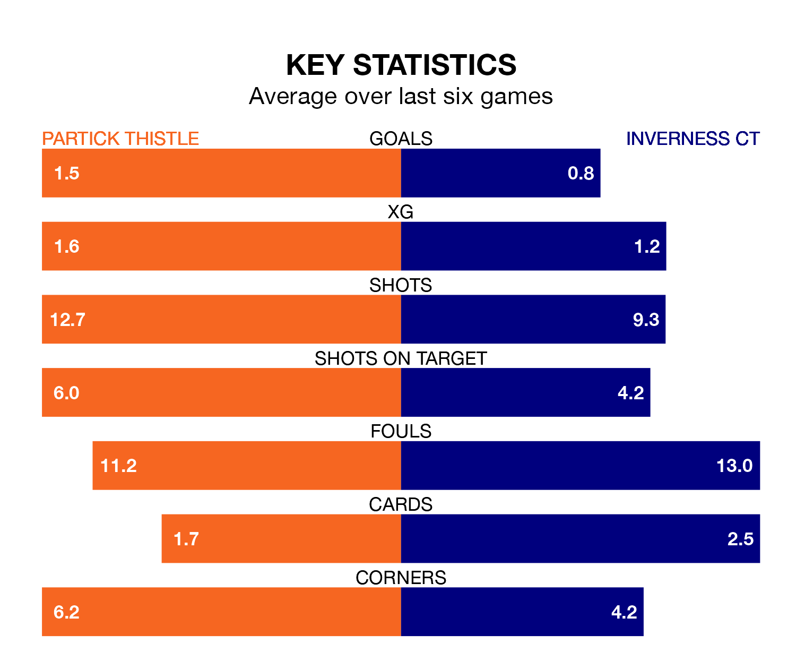

Relegation candidates Inverness CT face a challenge away against high-flying Partick Thistle at Wyre Stadium at Firhill on Saturday.
Inverness CT are ninth in the Championship table, and have picked up seven wins and 11 draws in their 30 games to date.
Thistle, meanwhile, are third in the standings with 46 points, having won 12 and drawn 10, and are 13 points behind table-toppers Dundee United.
With 56 goals in 30 games so far this season, Partick Thistle are the league's second-highest scorers with 1.9 goals per game. But they are conceding more than average too, letting in 49 goals at a rate of 1.6 per game.
Inverness CT, meanwhile, are below average scorers, with 1.1 goals per game, compared to a league average of 1.4. They have conceded 1.2 goals per game.
In Brian Graham, Thistle have the league's sharpest shooter so far this season. He has notched 17 goals in 28 appearances.
His goal rate of one every 136 minutes is much quicker than that of Billy McKay, ICT's top scorer with a goal every 273 minutes, and a total of eight goals in 30 games.
In the last 10 years, Partick Thistle and Inverness CT have played each other on 29 occasions. Partick Thistle won 11 of them, Inverness CT nine, and they drew nine times.
On average, Thistle scored 1.5 goals and ICT 1.1 in those matches.
Their last meeting was on February 17, when they played out a 3-3 draw.
The hosts are in mixed form in the Championship, with two wins and two draws from their last six games.
With a win and four draws over that period, the away team's form is slightly worse – they have taken seven points from 18, compared to Partick Thistle's eight.
Partick Thistle's last match was on March 23, a 1-0 win against Arbroath, with Aidan Fitzpatrick getting the goal for Thistle.
Inverness CT drew 1-1 with Dundee United last time out, also on March 23, with Wallace Duffy on the scoresheet.
Updated: 12:16 (UTC), 25/03/24